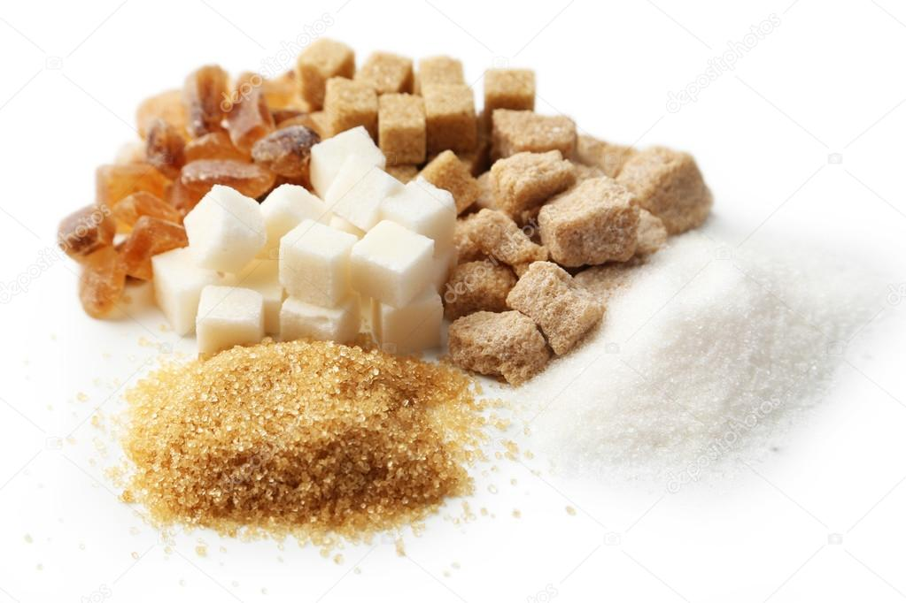
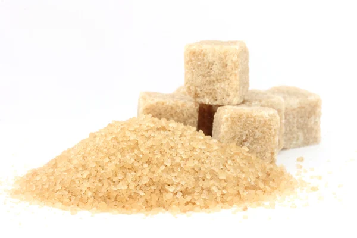

Sobre a Rapadura Susu Eirelli
Localizada no coração da cidade a Susu Eirelli traz para o mercado o que há de melhor na rapadura para o mundo. Fundada em 1994, a Susu Eirelli já é destaque no Brasil e no mundo. E conquista a cada vez mais os seus clientes.
Nossa Missão é:"Levar ao mundo o sabor da rapadura feita com o melhor ingrediente nativo do nosso país a Cana de açúcar".
Oferecemos aos nossos cliente uma experiência única, ao saborear nossa rapadura. O nosso atendimento possui padrão de excelência, garatindo qualidade e satisfação dos nossos clientes.
Benefícios
Acreditamos em um alimento natural e saudavel produzido diretamente da cana de açucar,mesmo sendo um produto industrializado nosso cliente estará ingerindo vitaminas como complexo B, fosforo, ferro e entre outros.
Usamos como ingredientes produtos naturais sendo: coco, canela e o amendoim. Indicamos também para que pessoas com diabetes possam ingerir com moderação nosso produto ja que a mesma oferece tantos beneficios.
| Valores Caloricos | |
|---|---|
| Rapadura | 100g |
| Energia | 352 kcal |
| Carboidrato | 90,8g |
| Proteína | 1g |
| Gordura | 0,1g |
| Fibras | 0g |
| Cálcio | :30mg |
| Ferro | 4,4g |
| Magnésio | 47mg |
| Potássio | 459mg |